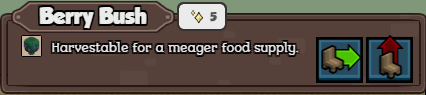
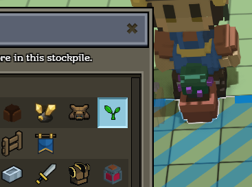

The catalog service takes care of cataloging the entities based on properties inside the entity_data of those entities.
This is an example of entity_data used by the catalog service, it is inside berry_bush_ghost.json, so the root entity described in berry_bush.json will also have this name/description/icon etc. (because it includes it as a mixin) :
"entity_data": {
"stonehearth:catalog": {
"display_name": "i18n(stonehearth:entities.plants.berry_bush.display_name)",
"description": "i18n(stonehearth:entities.plants.berry_bush.description)",
"icon": "file(berry_bush.png)",
"category": "plants",
"material_tags": "plant stockpile_plant"
}
}
Since it's inside "entity_data", this information will be the shared by every item of this type. The usual properties are "display_name", "description" and "icon", which will be shown in the unit frame when you select this item inside the game (in any of its entity forms). If we wanted, we could have different properties for the iconic version, since it's a separate entity on itself. 
Besides those, we also have "category", "material_tags", and "subjects".
 The values for these three properties are not meant to be localized (they're not inside "i18n()"), they are used by the game to assign categories internally.
The values for these three properties are not meant to be localized (they're not inside "i18n()"), they are used by the game to assign categories internally.
The "material_tags" is a string of materials separated by spaces. Alternatively, we can declare it as an array of strings, which will make it more compatible with other mods:
"material_tags": [ "plant", "stockpile_plant" ]
This way mods can add tags to this item without changing the whole string, which could overwrite other mod's added tags.
If you need to add a material tag to an item that has them as a string separated by spaces, your mixinto will need to have a string separated by spaces too, overwriting the whole value. If you want to convert it to an array (or viceversa), you'll need to use a mixintype to override the JSON node.
It is very important that you fill this field correctly when creating your own items, since they are restocked to the storage based on one or more of these tags. In this case, the "stockpile_plant" tag will make it so the item is restocked to stockpiles and crates with the plant filter enabled. 
When you tick the "All" checkbox in a stockpile, it will accept every item, without checking the tags. When you tick the "None" checkbox, the stockpile will refuse any item whatever their tags are. If you tick every filter, the "All" box will automatically tick, but it will not accept all items, just every items that match at least one of the filters.
The other tags defined here are used to catalog the item, and can be consulted like any other entity_data. For example, we could have "flammable" as one of the material tags and in some Lua file, check for all the entities with that tag and set fire to them (running a VFX, destroying the entities after some time has passed, or changing their model variants to give them a burnt look).
You might still see a "material" component in some of the game files. This is deprecated and has been replaced by the "material_tags" inside the "stonehearth:catalog" key from the entity_data.
A list with the existing storage filters is in stonehearth/ui/data/stockpile_filters.json and a list with the filters for the input boxes is in stonehearth/ui/data/input_box_filters.json. They are defined there, along with the localized string for displaying their name in the UI, their icon, order, etc. You can add your own filters with mixintos to these files.
The "category" is a generic category used for some of the traits and components, as well as to catalog your inventory (for edibles, wealth and showing groups of items in some of the menus). You can use it like the material tags, and use your own category if you want. There isn't a list of the existing categories, but if you copy a similar item from the stonehearth mod it will already have an appropiate category.
Its value is a single word, not several words separated by spaces, it's different from the "material_tags".
Another common key inside the "stonehearth:catalog" entity_data is
"is_item": true
This is normally used in the JSON files for the iconics, so that the hearthlings know that these are items that can be picked up.
The catalog service also reads the "stonehearth:net_worth" and "stonehearth:appeal" entries inside entity data to catalog buyable / sellable items and items that count for the appeal functionality / item preferences.
Unit info
Unit info is a component that was previously used for managing all the names and descriptions of the entities, but nowadays should only be used for things that can have custom names and descriptions (for example pets, hearthlings, goblins...).
In the game, this component is added from Lua when we want to change custom data of entities. In radiant/modules/entities.lua you can find functions to set custom names, descriptions, etc. from other Lua files, or even from the JavaScript files from the UI.
This way we ensure that this component is only added when we really have custom data that can change, as opposed to the display_name or description that we have inside the entity_data, which is reused for all the items of that type.